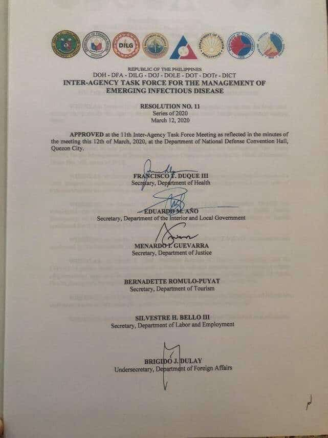
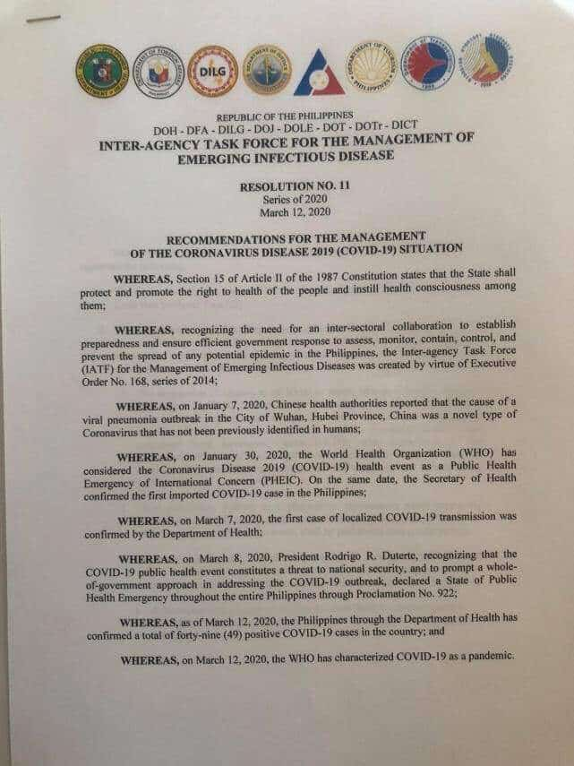
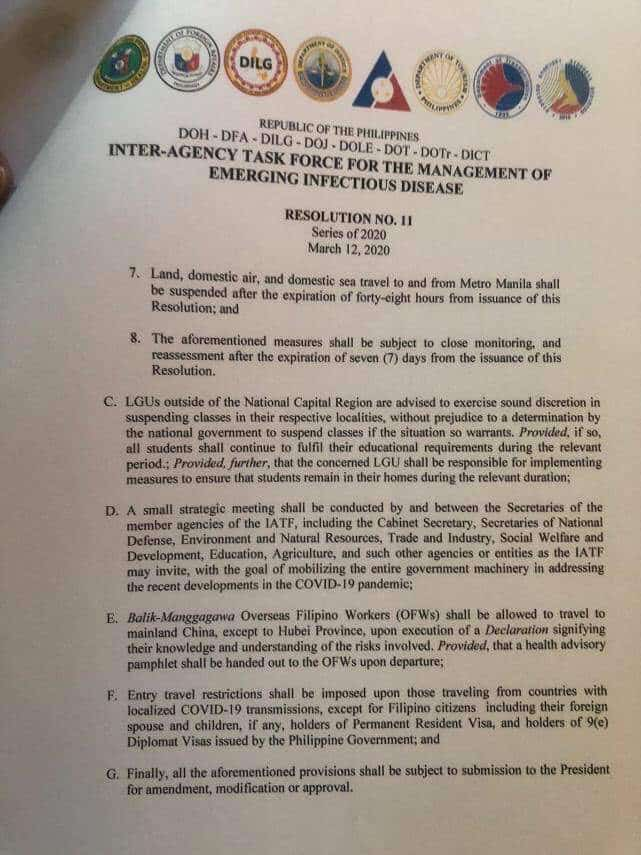
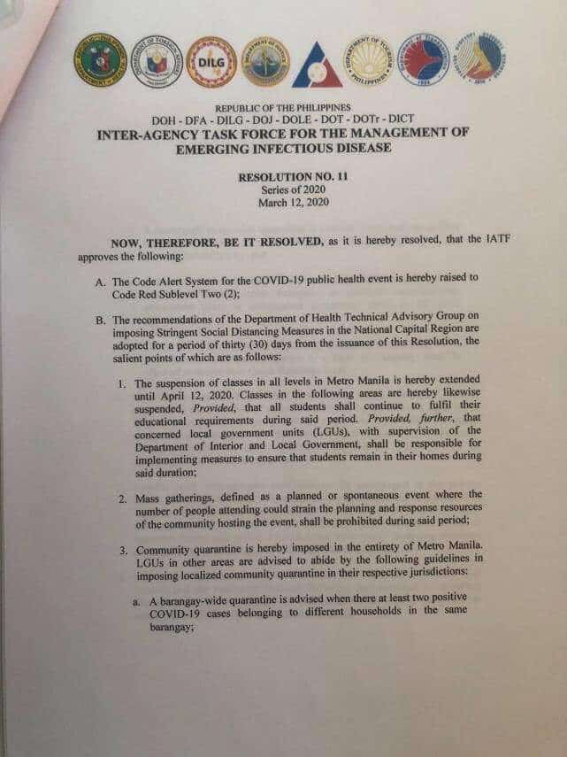
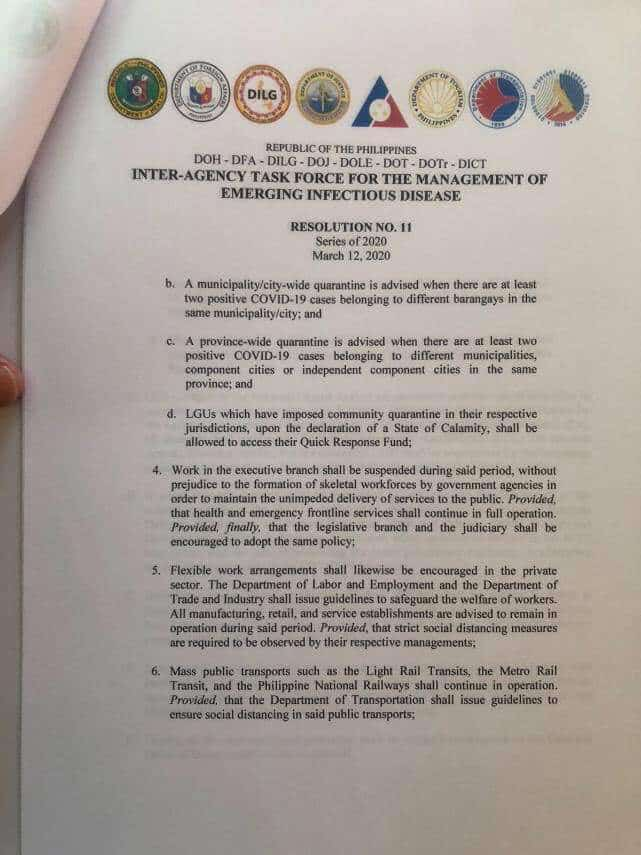

Coronaviruses (CoV) are a large family of viruses that cause illness ranging from the common cold to more severe diseases such as Middle East Respiratory Syndrome (MERS-CoV) and Severe Acute Respiratory Syndrome (SARS-CoV).
Coronavirus disease (COVID-19) is a new strain that was discovered in 2019 and has not been previously identified in humans.
Coronaviruses are zoonotic, meaning they are transmitted between animals and people. Detailed investigations found that SARS-CoV was transmitted from civet cats to humans and MERS-CoV from dromedary camels to humans. Several known coronaviruses are circulating in animals that have not yet infected humans.
Common signs of infection include respiratory symptoms, fever, cough, shortness of breath and breathing difficulties. In more severe cases, infection can cause pneumonia, severe acute respiratory syndrome, kidney failure and even death.
Standard recommendations to prevent infection spread include regular hand washing, covering mouth and nose when coughing and sneezing, thoroughly cooking meat and eggs. Avoid close contact with anyone showing symptoms of respiratory illness such as coughing and sneezing.
Know the facts about coronavirus disease 2019 (COVID-19) and help stop the spread of rumors.
Source from CDC. See also the pdf version for the complete details.
Fact #1
Diseases can make anyone sick regardless of their race or ethnicity. Fear and anxiety about COVID-19 can cause people to avoid or reject others even though they are not at risk for spreading the virus.
Fact #2
For most people, the immediate risk of becoming seriously ill from the virus that causes COVID-19 is thought to be low. Older adults and people of any age with underlying health conditions, such as diabetes, lung disease, or heart disease, are at greater risk of severe illness from COVID-19.
Fact #3
There are simple things you can do to help keep yourself and others healthy. 1. Wash your hands often with soap and water for at least 20 seconds, especially after blowing your nose, coughing, or sneezing; going to the bathroom; and before eating or preparing food. 2. Avoid touching your eyes, nose, and mouth with unwashed hands. 3. Stay home when you are sick. 4. Cover your cough or sneeze with a tissue, then throw the tissue in the trash.
Fact #4
You can help stop COVID-19 by knowing the signs and symptoms: Fever, Cough, Shortness of Breath Seek medical advice if you develop symptoms AND have been in close contact with a person known to have COVID-19 or live in or have recently traveled from an area with ongoing spread of COVID-19. Call ahead before you go to a doctor’s office or emergency room. Tell them about your recent travel and your symptoms.
If you have some helpful links that you want to see listed here, please send an email to mis@pnu.edu.ph.
University Issuances
Dear PNU Community,
This is for the information of the PNU Campuses regarding the plan and contingencies consistent with PNU Manila.
Widest dissemination to all concerned is enjoined.
Dear PNU Community,
As announced by President Rodrigo R. Duterte and the members of the IATF on the evening of March 16, 2020, the "enhanced" community quarantine status now covering the entire Luzon completely suspends all modes of mass public transport to limit public mobility.
In view of this, the previous issuances and guidelines relevant to the skeletal workforce in PNU Manila, subsequently adapted by PNU South Luzon and PNU North Luzon, are now RESCINDED. This means that work in PNU Manila and the two campuses are now totally suspended until further notice.
To ensure that we still address the basic concerns in our respective offices, heads of units/offices are encouraged to provide their employees/staff (regular and COS) tasks/deliverables that they can accomplish at home, if possible.
For PNU Visayas and PNU Mindanao, please follow the directives from your respective LGUs. If and when necessary, you may also come up with appropriate measures for the safety and protection of our employees.
In this time of crisis and uncertainty, I urge everyone to remain calm and observe government protocol to help prevent the spread of COVID-19.
Our collective prayers can also move mountains.
Please take care of yourselves and your families.
Dear Administrative Council Members and Employees of PNU Manila,
This is to once again forward the Implementing Rules and Regulations for the Skeletal Workforce.
For your information and reference.
Dear PNU Community,
Please be informed of the following advisory for graduating students of PNU Manila (undergraduate, post-baccalaureate, and graduate levels).
Widest dissemination to all concerned is enjoined.
To all skeletal workforce residing outside metro manila:
Ms. Jessica Bendo, our dorm manager is in-charge of the dormitory accomodation for our Skeletal workforce. You may coordinate with her anytime even thru on line.
Thank You.
To All Skeletal workforce,
while work suspension is imposed in PNU Main, flag raising ceremony is likewise suspended effective March 16, as per top management directive.
Thank You.
Dear PNU Community,
In line with the PNU -University Memorandum No. 53, s. 2020, please be guided with the attached Implementing rules on the alternate work schedules of the skeletal workforce from March 16 to April 14, 2020.
Dear PNU Community,
Please be informed of the advisory on plans and contingencies from March 16 to April 14, 2020.
Widest dissemination to all concerned is enjoined.
Dear PNU Community,
The rising number of confirmed cases of COVID19 in Metro Manila may require contact tracing in specific cases. Thus, it is important to be informed. Below are some facts about contact tracing.
FACTS ABOUT CONTACT TRACING:
Contact tracing is the identification, listing, and follow-up of persons who may have come into contact with COVID19 infected person.
Close contact is anyone who may have come into contact with an infected person
Person Under Investigation (PUI) refers to any person who exhibits fever and/or cough and colds and has at least one of the following, and shall be referred to hospital quarantine:
history of travel to areas with COVID19 14 days prior to onset of symptoms
has a history of exposure 14 days prior to onset of symptoms
Person Under Monitoring (PUM) refers to any person who does not exhibit any sign nor symptom, has history of exposure, and shall be referred to home quarantine
This is to share with you the Inter-Agency Task Force for the Management of Emerging Infectious Disease Resolution No. 11, Series of 2020 released today, March 12, 2020. This was also shared and discussed by President Duterte during his Press Conference tonight.
The Management will release a Memorandum relevant to the operations of the University based on the recommendations herein after consultations with key people and officials.
In the meantime, everyone is enjoined to stay indoors, practice good hygiene, and exercise vigilance in these uncertain times.
Thank you.





To ALL OFFICES:
With increasing number of cases of COVID human-to human transmissions spreading to various communities in the NCR and in the provinces, we encourage everyone to practice 'SOCIAL DISTANCING MEASURES' in the PNU community.
If possible, stay put in your working area. Cancel group gatherings except in cases where exigency of service is required, particularly top officials and other offices that are involved in crucial decisions of the University and issues that matters health and safety of the community. Make use of alternative mode of technology in transactions if possible such as emails, video or telephone conferences. Always practice personal protection and hygiene.Please refer to the University Memorandum Re. University-wide Contingency Plan and Strategies in view of the COVID-19 outbreak for reminders.
Keep safe everyone.
Dear PNU Community,
Please be guided by the attached University-wide Contingency Plan and Strategies in view of the COVID-19 outbreak.
Widest dissemination to all concerned is advised.
- PNU Management
With the recent developments on the COVID-19 outbreak and the increasing number of incidents not only in the Philippines but around the globe, the Philippine Normal University continues to exercise vigilance and proactive measures to prevent the spread of the virus.
Faculty members, administrative staff, and students are still encouraged to limit their activities, especially outside the University, to avoid exposure. Official travel to countries with or without confirmed cases will likewise be very limited.
For those who have recently travelled to countries with confirmed cases and have experienced symptoms of severe respiratory illness or other signs of COVID-19, please seek medical attention immediately.
Safety mechanisms and protective measures:
Gate 1 and Gate 2 of the Main Entrance and HRD Gate will be used for entry and exit. Access to the other gates will be very limited. Medical personnel are on standby on both gates to do temperature check and, in case of emergency, provide immediate medical attention to the individual showing symptoms. Rubbing alcohol and sanitizers are also available in strategic places around the campus.
The University Health Services Unit (UHSU) has a limited supply of protective gear; thus faculty members, administrative staff, and students are encouraged to provide for their own.
Prevention is better than cure. Always practice good personal hygiene and a healthy lifestyle. Wash hands frequently with soap and water and disinfect with alcohol-based solutions whenever possible. Avoid touching eyes, nose, and mouth to prevent contamination. Make sure to follow good respiratory hygiene. This means covering the mouth and nose with a bent elbow or a tissue when coughing or sneezing and then disposing of the used tissue paper immediately.
Boost the immune system by eating healthy food and taking vitamins, if any.
Maintain social distancing. Make sure to leave at least 1 meter distance from anyone who is coughing and sneezing.
Stay calm but vigilant at all times. Do not panic.
Anyone experiencing any symptoms of the COVID-19 is advised to seek medical attention immediately and stay home to rest.
The University is currently monitoring the situation with the help of other government agencies. Further announcements regarding the COVID-19 will be released once available.
For concerns, inquiries, and assistance, please contact the UHSU through (+63 2) 5317.1768 loc. 592 or via email at uhsu@pnu.edu.ph.
The Department of Health (DOH) has confirmed the first case of a person with the novel coronavirus (2019-nCoV) on January 30, 2020. In addition, DOH records 56 “nCoV-related health events” (not patients) in the Philippines as of January 31, 2020. According to the World Health Organization (WHO), the current outbreak originated in Wuhan City in China, which is a major domestic and international transport hub. Some of the countries with reported confirmed cases are Thailand, Japan, South Korea, United States of America, Vietnam, Singapore, Australia, Nepal, France, Malaysia, Canada, Germany, Sri Lanka, India, Cambodia, Finland, Italy, United Arab Emirates, and the Philippines.
What is PNU doing?
The University has carefully considered the current situation and is initiating measures to prevent the spread of the virus such as more thorough monitoring of people going in and out of the campus, careful preparations of equipment and facilities, and formulation of response protocols. Plans are underway to purchase additional rubbing alcohol, hand sanitizers, protective gear, and thermal scanners.
As a precautionary measure, people entering the campus will have their temperature checked. Rubbing alcohol and hand sanitizers will be available at the gates, restrooms, and strategic places around the campus. Protective masks will be provided by the University Health Services Unit (UHSU) until supplies last.
In the interest of safety, faculty members, administrative staff, and students are encouraged to limit their activities, especially outside the University, to avoid exposure. Official travel to countries with confirmed cases will also be very limited.
For those who have recently travelled to countries with confirmed cases and have experienced symptoms of severe respiratory illness or other signs of the 2019-nCoV, please seek medical attention immediately.
Safety Mechanisms:
Gate 1 and Gate 2 of the Main Entrance and HRD Gate will be used for entry and exit. Medical personnel are on standby on both gates, in case of emergency. Access to the other gates will be very limited.
The University Health Services Unit (UHSU) has a limited supply of protective gear; thus faculty members, administrative staff, and students are encouraged to provide for their own.
Prevention is better than cure. Always practice good personal hygiene and a healthy lifestyle. Wash your hands frequently with soap and water and disinfect whenever possible.
Stay calm but vigilant at all times.
Anyone experiencing any symptoms of the 2019-nCoV is advised to seek medical attention immediately and stay home to rest.
The University is currently monitoring the situation with the help of other government agencies.
Further announcements regarding the 2019-nCoV will be released once they are available.
For concerns, inquiries, and assistance, please contact the UHSU through (+63 2) 5317.1768 loc. 592 or via email at uhsu@pnu.edu.ph.